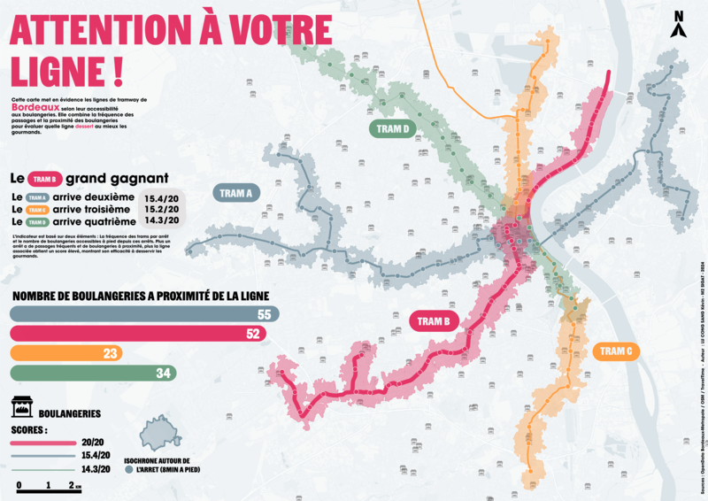
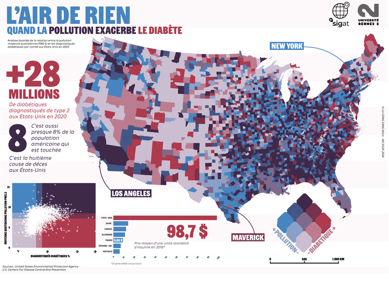
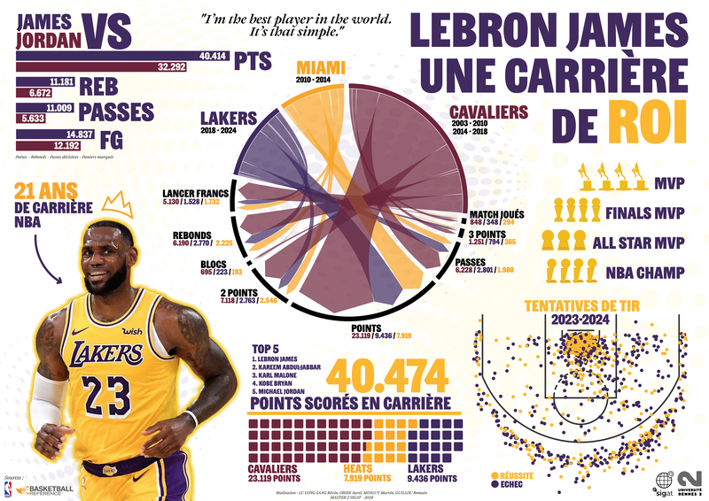

Kevin
← projets
Attention à votre ligne !
Quelle ligne de tram de Bordeaux dessert le mieux les gourmands ? Un score qui croise la fréquence des passages et les boulangeries à 8 minutes à pied de chaque arrêt.

L'air de rien
Une carte bivariée par comté qui croise la pollution aux particules fines (PM2.5) et le diabète diagnostiqué aux États-Unis en 2020.

LeBron James, une carrière de roi
21 saisons en une affiche : points par équipe, carte des tirs 2023-2024 et comparaison avec Michael Jordan.